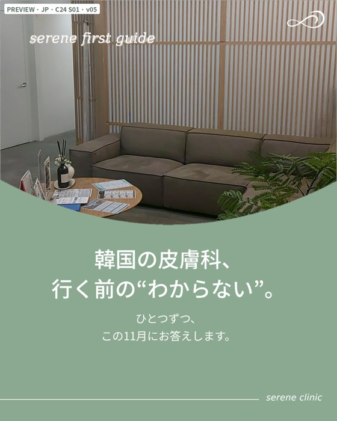
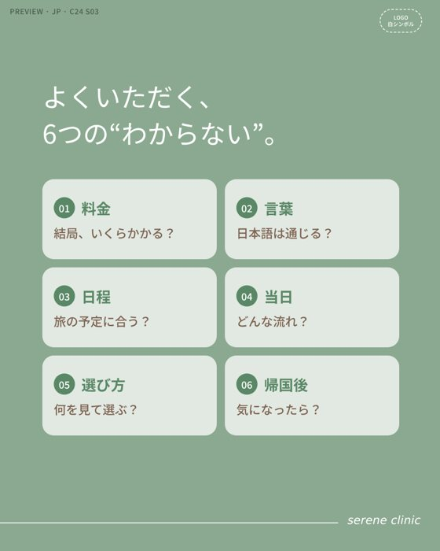
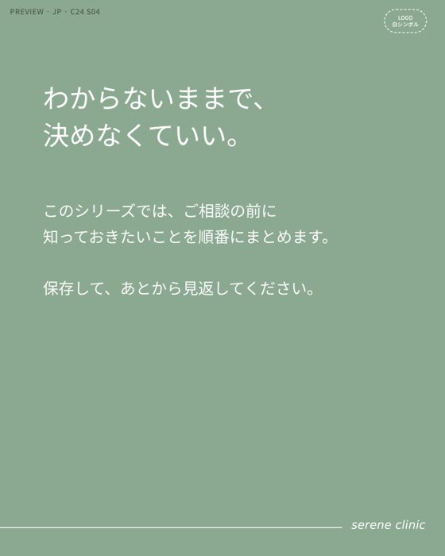
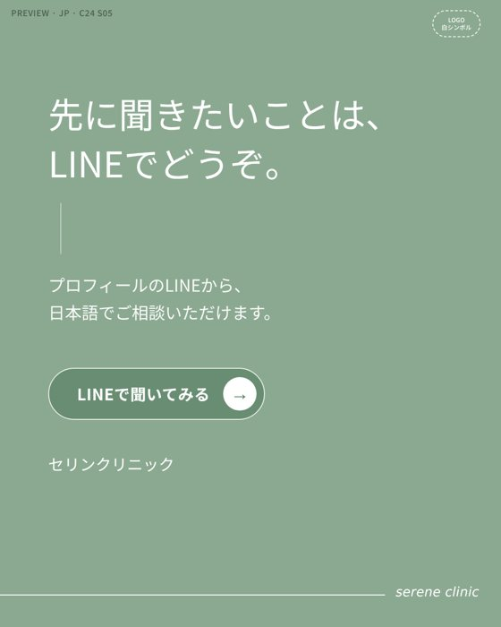
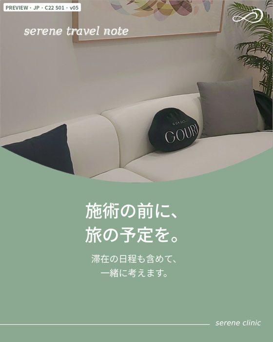
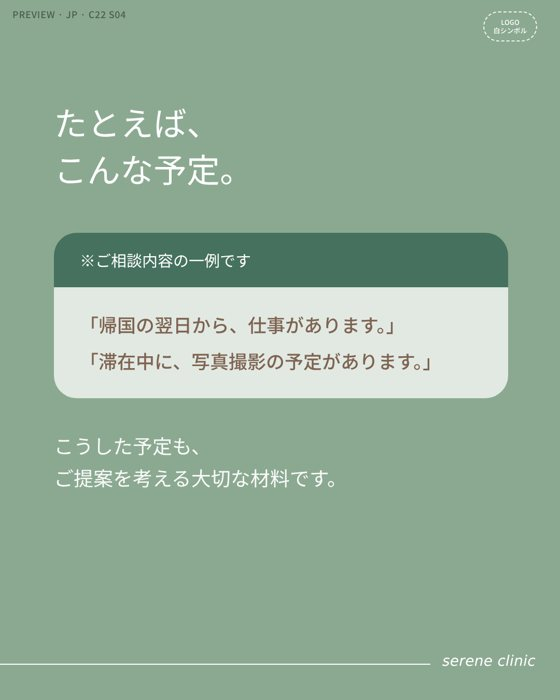
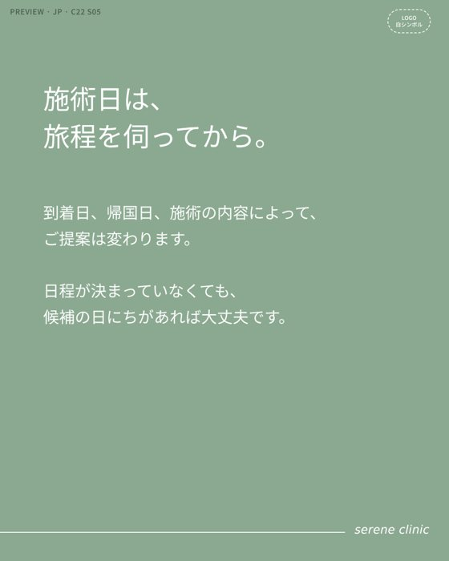
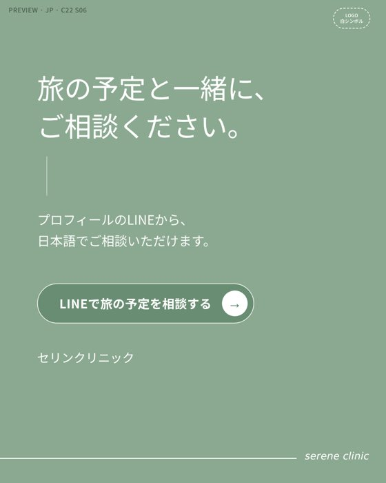
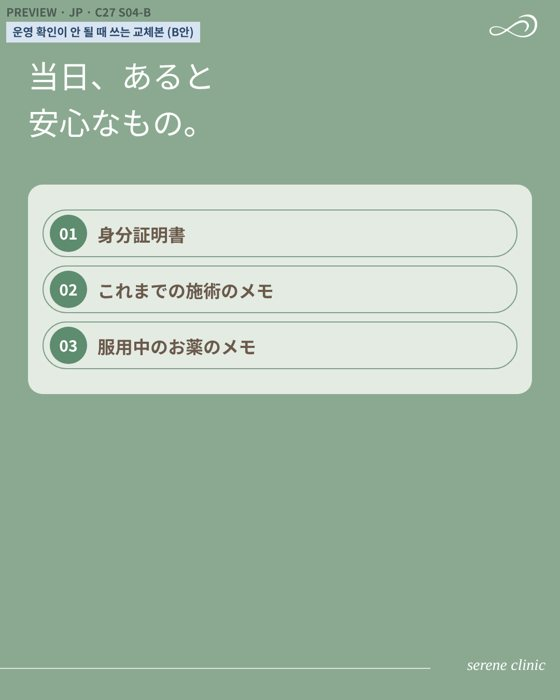
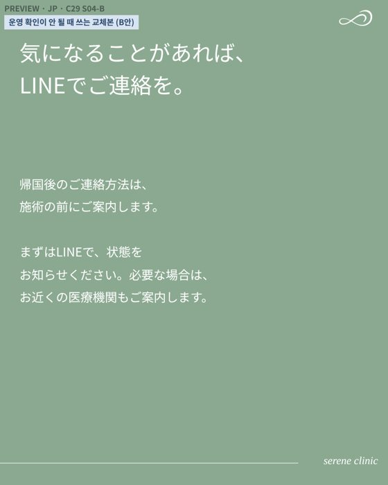

X 게시 본문 (게시 담당용)
韓国の皮膚科、気になるけれど一歩が出ない。 その理由は「わからない」が多いからかもしれません。 料金、言葉、日程、当日の流れ、選び方、帰国後。 11月は、この6つに順番にお答えします。
한국 피부과, 궁금하지만 한 걸음이 안 나간다. 그 이유는 ‘모르는 것’이 많아서일지도 모릅니다. 비용, 언어, 일정, 당일 순서, 고르는 법, 귀국 후. 11월에는 이 6가지에 차례로 답해 드립니다.
날짜를 누르면 그날 게시하는 콘텐츠가 모두 나옵니다. 콘텐츠마다 규격, 최종 파일 마감, 기획 의도, 디자인 메모가 있고, 목업 이미지 바로 옆에 이미지에 들어가는 일본어 문구와 한국어 뜻을 적었습니다. 「문구 복사」를 누르면 일본어 문구만 복사됩니다.
기획 의도 11월 시리즈의 첫 편입니다. 일본 고객이 망설이는 6가지 「모르겠다」를 목차처럼 보여 주고 저장을 유도합니다.





기획 의도 피드 C24와 같은 날 X에 올립니다. 배너는 피드 표지를 가로형으로 바꾼 것입니다.
韓国の皮膚科、気になるけれど一歩が出ない。 その理由は「わからない」が多いからかもしれません。 料金、言葉、日程、当日の流れ、選び方、帰国後。 11月は、この6つに順番にお答えします。
한국 피부과, 궁금하지만 한 걸음이 안 나간다. 그 이유는 ‘모르는 것’이 많아서일지도 모릅니다. 비용, 언어, 일정, 당일 순서, 고르는 법, 귀국 후. 11월에는 이 6가지에 차례로 답해 드립니다.
기획 의도 내일 게시할 C22를 예고하고 투표·퀴즈로 반응을 모읍니다.

기획 의도 피드 게시 당일에 게시물을 스토리로 공유하고 질문 스티커로 고객 질문을 모읍니다.
기획 의도 여행 일정을 먼저 알려 주면 그에 맞춰 제안한다는 점을 보여 줘 상담 문턱을 낮춥니다.






기획 의도 피드 C22와 같은 날 X에 올립니다. 배너는 피드 표지를 가로형으로 바꾼 것입니다.
韓国で美容医療を考えるなら、施術の前に旅の予定を。 施術後の過ごし方には個人差があり、帰国後の予定によって考え方が変わることもあります。 滞在日程と帰国後の予定を、ご相談のときに教えてください。 ▶ https://sereneseoul.com/?utm_source=x&utm_medium=organic&utm_campaign=jp_c22-30&utm_content=c22
한국에서 미용의료를 생각한다면, 시술 전에 여행 일정을. 시술 후 지내는 방식에는 개인차가 있고, 귀국 후 일정에 따라 고려할 점이 달라질 수 있습니다. 체류 일정과 귀국 후 일정을 상담할 때 알려 주세요. ▶ https://sereneseoul.com/?utm_source=x&utm_medium=organic&utm_campaign=jp_c22-30&utm_content=c22
기획 의도 피드 게시 당일에 게시물을 스토리로 공유하고 질문 스티커로 고객 질문을 모읍니다.
기획 의도 다운타임 질문에 「체류 일수를 알려 주면 일정에 맞춰 제안한다」로 답합니다. C22 일정 편을 다시 불러옵니다.


기획 의도 내일 게시할 C25를 예고하고 투표·퀴즈로 반응을 모읍니다.
기획 의도 총액은 시술 전에 안내한다는 요금 구조를 보여 줍니다. 금액 숫자는 넣지 않습니다.


기획 의도 피드 C25와 같은 날 X에 올립니다. 배너는 피드 표지를 가로형으로 바꾼 것입니다.
韓国の皮膚科、結局いくらかかる？ SERENEでは ・メニュー価格はウォン・税込 ・診察料は施術料金とは別 ・総額は施術の前にご案内 総額を確認してから、決めてください。 ▶ https://sereneseoul.com/?utm_source=x&utm_medium=organic&utm_campaign=jp_c22-30&utm_content=c25
한국 피부과, 결국 얼마 들까? 세린은 · 메뉴 가격은 원화·부가세 포함 · 진찰료는 시술 비용과 별도 · 총액은 시술 전에 안내 총액을 확인한 뒤에 정하세요. ▶ https://sereneseoul.com/?utm_source=x&utm_medium=organic&utm_campaign=jp_c22-30&utm_content=c25
기획 의도 피드 게시 당일에 게시물을 스토리로 공유하고 질문 스티커로 고객 질문을 모읍니다.
기획 의도 일본의 「피부의 날」에 맞춰 고객의 피부 고민을 질문 스티커로 모읍니다.
기획 의도 C22 일정 편과 짝. 검색으로 들어오는 독자에게 일정 이야기를 길게 설명합니다.
기획 의도 11월 첫방문 조건이 있으면 안내합니다. 조건이 없으면 생략합니다.
기획 의도 일본인 고객 SHORI의 실제 내원 기록입니다. 원음을 살리고 일본어 자막만 정리합니다.


기획 의도 10월까지의 피드 내용을 질문 하나로 다시 알리는 X 단독 게시물입니다.

母娘での韓国旅行を計画される方もいらっしゃいます。 同じ鏡を見ていても、気になるところや、なりたい印象は違うことがあります。 ご一緒にいらしても、ご相談はおひとりずつ伺います。 #母娘旅行 #韓国美容
모녀가 함께 한국 여행을 계획하시는 분도 계십니다. 같은 거울을 봐도, 신경 쓰이는 곳이나 원하는 인상은 다를 수 있습니다. 함께 오셔도 상담은 한 분씩 따로 여쭙니다.
기획 의도 10월까지의 피드 내용을 질문 하나로 다시 알리는 X 단독 게시물입니다.
症例写真を見るとき、変化だけで判断していませんか。 あわせて確認したいのは、施術内容・費用・主なリスク・経過の4つです。 撮影の時期や条件で、写真の見え方は変わります。結果には個人差があります。 #症例写真 #韓国美容医療
증례 사진을 볼 때, 변화만 보고 판단하고 있지 않나요? 함께 확인할 것은 시술 내용·비용·주요 위험·경과 4가지입니다. 촬영 시기와 조건에 따라 사진은 달라 보입니다. 결과에는 개인차가 있습니다.
기획 의도 내일 게시할 C26를 예고하고 투표·퀴즈로 반응을 모읍니다.

기획 의도 상담부터 시술 후까지 일본어로 안내되는 시점을 보여 줘 언어 불안을 줄입니다.


기획 의도 피드 C26와 같은 날 X에 올립니다. 배너는 피드 표지를 가로형으로 바꾼 것입니다.
日本語は、どこまで通じる？ 伝えるときは、短くて大丈夫です。 ・気になる部位 ・いつから気になっているか ・これまでに受けた施術 まずはLINEで、日本語のままどうぞ。 ▶ https://sereneseoul.com/?utm_source=x&utm_medium=organic&utm_campaign=jp_c22-30&utm_content=c26
일본어는 어디까지 통할까? 전할 때는 짧아도 괜찮습니다. · 신경 쓰이는 부위 · 언제부터 신경 쓰였는지 · 지금까지 받은 시술 먼저 라인으로, 일본어 그대로 보내 주세요. ▶ https://sereneseoul.com/?utm_source=x&utm_medium=organic&utm_campaign=jp_c22-30&utm_content=c26
기획 의도 피드 게시 당일에 게시물을 스토리로 공유하고 질문 스티커로 고객 질문을 모읍니다.

기획 의도 「한국어를 못해도 상담할 수 있을까?」에 답합니다. C26 언어 편을 다시 불러옵니다.
기획 의도 증례 사진을 볼 때 확인할 4가지를 설명합니다 (선택 발행).

기획 의도 11/21~23 연휴에 오는 고객에게 진료일과 당일 흐름 안내를 알립니다.
기획 의도 내일 게시할 C27를 예고하고 투표·퀴즈로 반응을 모읍니다.

기획 의도 내원 당일의 5단계 흐름과 준비물을 보여 줍니다. 3連休(11/21~23) 직전에 게시합니다.



기획 의도 피드 C27와 같은 날 X에 올립니다. 배너는 피드 표지를 가로형으로 바꾼 것입니다.
来院当日、施術の前にすること。 受付・問診票 → カウンセリング・診察 → 内容・費用・リスクのご説明 → ご同意のうえで施術 説明を聞いて、納得してから決めて大丈夫です。
방문 당일, 시술 전에 하는 일. 접수·문진표 → 상담·진찰 → 내용·비용·위험 설명 → 동의 후 시술 설명을 듣고 납득한 뒤에 정해도 괜찮습니다.
기획 의도 피드 게시 당일에 게시물을 스토리로 공유하고 질문 스티커로 고객 질문을 모읍니다.
기획 의도 내원 당일 흐름을 보여 줍니다. C27 당일 편을 다시 불러오며 3連休 첫날에 게시합니다.

기획 의도 10월까지의 피드 내용을 질문 하나로 다시 알리는 X 단독 게시물입니다.
何を受けるか、まだ決めていなくても大丈夫です。 ご予約の前でも、ご質問だけでもご相談いただけます。 気になることを、LINEでひとことお送りください。日本語で承ります。 ▶ LINE：https://sereneseoul.com/?utm_source=x&utm_medium=organic&utm_campaign=jp_c13-21&utm_content=x06 #韓国皮膚科 #韓国美容
무엇을 받을지 아직 정하지 않았어도 괜찮습니다. 예약 전이라도, 질문만이라도 상담하실 수 있습니다. 궁금한 것을 라인으로 한마디 보내 주세요. 일본어로 응대합니다. ▶ LINE: https://sereneseoul.com/?utm_source=x&utm_medium=organic&utm_campaign=jp_c13-21&utm_content=x06
기획 의도 10월까지의 피드 내용을 질문 하나로 다시 알리는 X 단독 게시물입니다.
SERENEのカウンセリングで、最初に伺うのは施術名ではありません。 今のお悩み、お肌の状態、これまでに受けた施術、大切にしたい印象。 それを伺ってから、ご提案を考えます。 #韓国皮膚科 #カウンセリング
세린의 상담에서 처음 여쭙는 것은 시술명이 아닙니다. 지금의 고민, 피부 상태, 지금까지 받은 시술, 소중히 하고 싶은 인상. 그것을 여쭌 뒤에 제안을 생각합니다.
기획 의도 내일 게시할 C28를 예고하고 투표·퀴즈로 반응을 모읍니다.

기획 의도 어디서든 쓸 수 있는 클리닉 선택 기준 4가지를 보여 줍니다. 다른 병원과 비교하거나 비방하지 않습니다.


기획 의도 피드 C28와 같은 날 X에 올립니다. 배너는 피드 표지를 가로형으로 바꾼 것입니다.

美容クリニックを選ぶとき、何を見る？ ・料金と総額の案内が明確か ・施術前に医師の診察があるか ・リスクや経過の説明があるか ・日本語で質問できるか 口コミや価格の前に、確かめておきたいことです。
미용 클리닉을 고를 때 무엇을 볼까? · 비용과 총액 안내가 명확한가 · 시술 전에 의사 진찰이 있는가 · 위험과 경과 설명이 있는가 · 일본어로 질문할 수 있는가 후기나 가격보다 먼저 확인해 두면 좋은 것입니다.
기획 의도 피드 게시 당일에 게시물을 스토리로 공유하고 질문 스티커로 고객 질문을 모읍니다.
기획 의도 부원장 소개 영상을 그대로 쓰되 자막만 고칩니다. C28 고르는 법 편을 다시 불러옵니다.


기획 의도 내일 게시할 C29를 예고하고 투표·퀴즈로 반응을 모읍니다.
기획 의도 귀국 후 연락 방법을 시술 전에 확인하도록 안내합니다.



기획 의도 피드 C29와 같은 날 X에 올립니다. 배너는 피드 표지를 가로형으로 바꾼 것입니다.

施術は、帰国したら終わりではありません。 施術の前に確認しておきたいこと ・施術後に起こりうる変化 ・帰国後の過ごし方 ・気になったときの連絡方法 経過には個人差があります。
시술은 귀국하면 끝이 아닙니다. 시술 전에 확인해 두면 좋은 것 · 시술 후 생길 수 있는 변화 · 귀국 후 지내는 법 · 신경 쓰일 때 연락 방법 경과에는 개인차가 있습니다.
기획 의도 피드 게시 당일에 게시물을 스토리로 공유하고 질문 스티커로 고객 질문을 모읍니다.

기획 의도 연말연시 방한 예약이 시작되는 시점에 진료일을 알립니다.
기획 의도 11월 시리즈 6편을 한 글로 묶은 허브 글입니다.

기획 의도 「결국 얼마나 들까?」에 답합니다. 연말 예약 전 가격 안내 역할을 합니다.

기획 의도 내일 게시할 C30를 예고하고 투표·퀴즈로 반응을 모읍니다.
기획 의도 11월 시리즈의 마지막 편입니다. 스토리로 모은 실제 질문에 답합니다.


기획 의도 피드 C30와 같은 날 X에 올립니다. 배너는 피드 표지를 가로형으로 바꾼 것입니다.

「施術を決めていなくても、相談できますか？」 はい。ご予約の前でも、ご質問だけでも大丈夫です。 はじめての方からよくいただく質問を、Instagramにまとめました。
“시술을 정하지 않았어도 상담할 수 있나요?” 네. 예약 전이라도, 질문만 하셔도 괜찮습니다. 처음 오시는 분께 자주 듣는 질문을 인스타그램에 정리했습니다.
기획 의도 피드 게시 당일에 게시물을 스토리로 공유하고 질문 스티커로 고객 질문을 모읍니다.

| 게시일 | 콘텐츠 | 종류 | 최종 파일 마감 |
|---|---|---|---|
| 11/11 (수) | C25 D-1 | 스토리 | 11/10 (화) 18:00 |
| 11/12 (목) | C25 | 피드 | 11/11 (수) 18:00 |
| 11/12 (목) | C25 X | X | 11/11 (수) 18:00 |
| 11/12 (목) | C25 D0 | 스토리 | 11/11 (수) 18:00 |
| 11/12 (목) | 皮膚の日 | 스토리 | 11/11 (수) 18:00 |
| 11/14 (토) | RL03 | 릴스 | 11/12 (목) |
| 11/13 (금) | N02 | note | 11/12 (목) 18:00 |
| 11/13 (금) | 첫방문 안내 | 스토리 | 11/12 (목) 18:00 |
| 11/16 (월) | C26 D-1 | 스토리 | 11/15 (일) 18:00 |
| 11/18 (수) | RL01 | 릴스 | 11/16 (월) |
| 11/17 (화) | C26 | 피드 | 11/16 (월) 18:00 |
| 11/17 (화) | C26 X | X | 11/16 (월) 18:00 |
| 11/17 (화) | C26 D0 | 스토리 | 11/16 (월) 18:00 |
| 11/18 (수) | N04 | note | 11/17 (화) 18:00 |
| 11/18 (수) | 3連休 안내 | 스토리 | 11/17 (화) 18:00 |
| 11/18 (수) | C27 D-1 | 스토리 | 11/17 (화) 18:00 |
| 11/19 (목) | C27 | 피드 | 11/18 (수) 18:00 |
| 11/19 (목) | C27 X | X | 11/18 (수) 18:00 |
| 11/19 (목) | C27 D0 | 스토리 | 11/18 (수) 18:00 |
| 11/21 (토) | RL04 | 릴스 | 11/19 (목) |
| 11/23 (월) | C28 D-1 | 스토리 | 11/22 (일) 18:00 |
| 11/25 (수) | RL05 | 릴스 | 11/23 (월) |
| 11/24 (화) | C28 | 피드 | 11/23 (월) 18:00 |
| 11/24 (화) | C28 X | X | 11/23 (월) 18:00 |
| 11/24 (화) | C28 D0 | 스토리 | 11/23 (월) 18:00 |
| 11/25 (수) | C29 D-1 | 스토리 | 11/24 (화) 18:00 |
| 11/26 (목) | C29 | 피드 | 11/25 (수) 18:00 |
| 11/26 (목) | C29 X | X | 11/25 (수) 18:00 |
| 11/26 (목) | C29 D0 | 스토리 | 11/25 (수) 18:00 |
| 11/26 (목) | 年末年始 | 스토리 | 11/25 (수) 18:00 |
| 11/28 (토) | RL02 | 릴스 | 11/26 (목) |
| 11/27 (금) | N05 | note | 11/26 (목) 18:00 |
| 11/29 (일) | C30 D-1 | 스토리 | 11/28 (토) 18:00 |
| 11/30 (월) | C30 | 피드 | 11/29 (일) 18:00 |
| 11/30 (월) | C30 X | X | 11/29 (일) 18:00 |
| 11/30 (월) | C30 D0 | 스토리 | 11/29 (일) 18:00 |
| 11/11 (수) | RL06 | 릴스 | 11/9 (월) |
| 11/9 (월) | C24 | 피드 | 11/9 (월) 18:00 |
| 11/9 (월) | C24 X | X | 11/9 (월) 18:00 |
| 11/9 (월) | C22 D-1 | 스토리 | 11/9 (월) 18:00 |
| 11/9 (월) | C24 D0 | 스토리 | 11/9 (월) 18:00 |
| 11/10 (화) | C22 | 피드 | 11/9 (월) 18:00 |
| 11/10 (화) | C22 X | X | 11/9 (월) 18:00 |
| 11/10 (화) | C22 D0 | 스토리 | 11/9 (월) 18:00 |
메디힘 · 세린 일본 3채널 11월 발행 · 마스터 일정 기준 · 2026-11-11 갱신